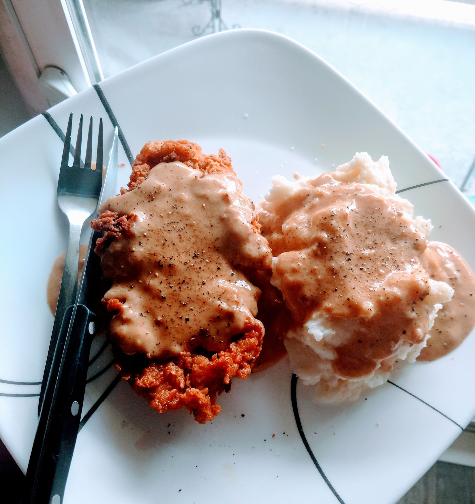

Easy Air-Fryer Chicken Parmesan

Description
If going to the Cracker Barrell is too much work, this might be perfect.
I'm hungry just thinking about it.
Ingredients
- 2 large chicken breasts, halved
- a whole bunch of vegetable oil for frying
- 2 cups chicken stock
- 1/2 heavy whipping cream
- 1 pint buttermilk
- 3 eggs
- 1/2 cup milk
- 1 1/2 cup flour
- 1 tablespoon paprika
- 1 tablespoon garlic powder
- 1 teaspoon onion powder
- 1 teaspoon cayenne pepper
- 1 teaspoon red pepper flakes
- salt and pepper.
Steps
- After cutting chicken, put it in freezer bag and dump buttermilk over it. Refrigerate for one hour prior to cooking.
- In a large pot, heat cooking oil to about 350 degrees. You want atleast 2 inches of oil in the bottom of the pan
- Mix together flour and all the other dry ingredients in a shallow dish or on a plate until fully combined. Immediately remove about a quarter cup of the flour mixture and set aside.
- In another shallow dish, mix together your eggs and milk. Whisk it well.
- Dredge your chicken through the flour mixture, then through the milk/egg mixture, then back through the flour mix again
- Toss those birds in the preheated oil. Don't crowd the pan. You'll regret it.
- Cook each piece for about three minuites on each side. Remove to a paper towl-lined plate or a rakc over paper towels to drain the grease.
- Drain just about all the oil. Leave enough in teh bottom to make a roux and keep the "drippings" in the bottom.
- Return the pan to the heat, add in the flour mixture, and stir it to combine with the grease.
- Once the gravy is gravied, whisk in your chicken stock. Once that comes to a simmer, dump in heavy whipping cream. Bring back to a simmer. Get it thick.
- Remove gravy from heat and let it cool for about five minutes. Plate your chicken and serve with gravy.
Credit
This recipe can be found at its original site here